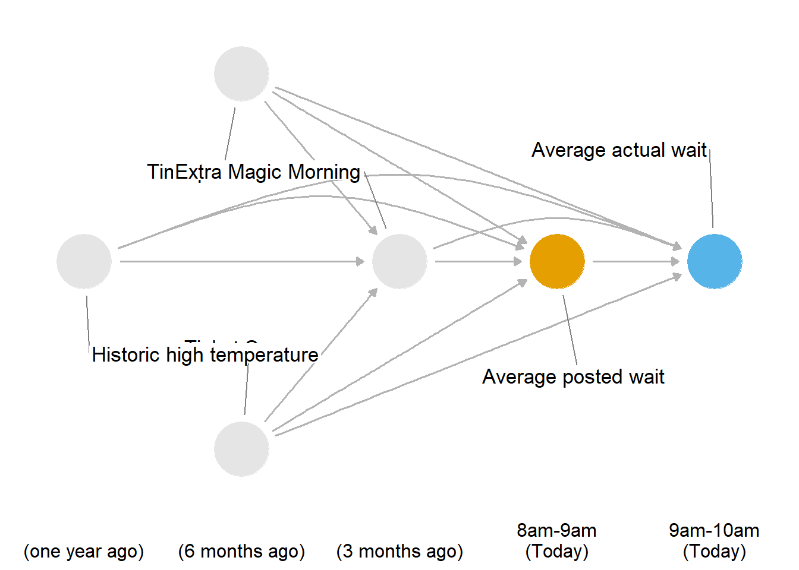
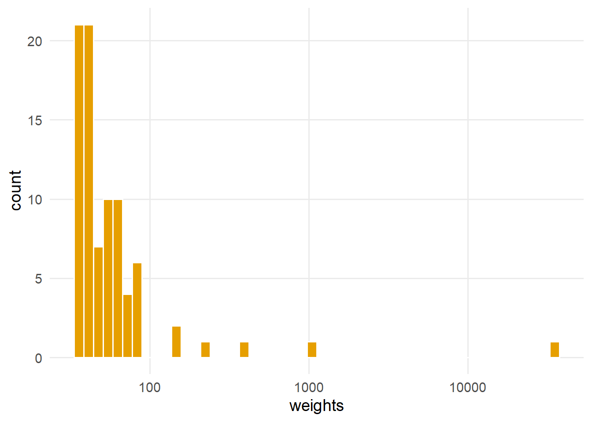
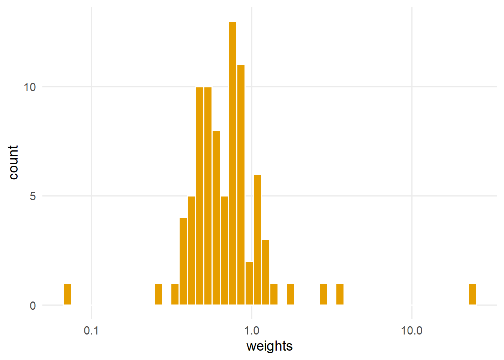
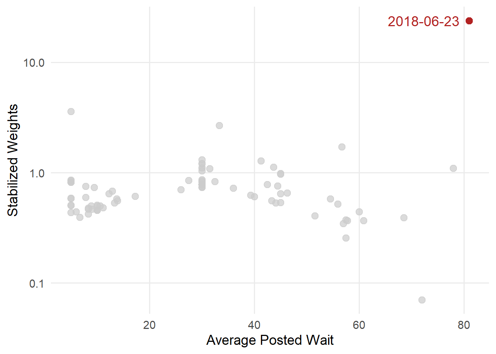

警告Work-in-progress 🚧
You are reading the work-in-progress first edition of Causal Inference in R. This chapter is actively undergoing work and may be restructured or changed. It may also be incomplete.
Continuous and categorical exposures · 原书逐章中译
来源：Malcolm Barrett、Lucy D’Agostino McGowan、Travis Gerke，Causal Inference in R · Continuous and categorical exposures。 本页为中文翻译；原书代码块、公式、图表交叉引用和引用键均按原文保留。统计图在网页渲染时由 R 代码生成，静态插图直接引用原文件。 原书仓库采用 CC BY-NC-SA 4.0；代码采用 MIT 许可。请遵守原许可证并注明作者。
You are reading the work-in-progress first edition of Causal Inference in R. This chapter is actively undergoing work and may be restructured or changed. It may also be incomplete.
倾向评分可推广到许多其他类型的暴露，包括连续暴露。 其核心流程相同：我们拟合一个以暴露为结局的模型，然后用该模型对第二个结局模型进行加权。 对于连续暴露，线性回归是构建倾向评分最简单的方法。 我们不使用概率，而使用累积分布函数。 然后使用该密度对结局模型进行加权。
让我们看一个例子。 在 touringplans 数据集中，我们掌握了游乐设施公布等待时间的信息。 我们还掌握少量观测到的实际等待时间数据。 我们要考虑的问题是：早上8点 Seven Dwarfs Mine Train 公布的等待时间是否会影响早上9点的实际等待时间？ 下面是我们的 DAG：
library(tidyverse)
library(ggdag)
library(ggokabeito)
coord_dag <- list(
x = c(Season = -1, close = -1, weather = -2, extra = 0, x = 1, y = 2),
y = c(Season = -1, close = 1, weather = 0, extra = 0, x = 0, y = 0)
)
labels <- c(
extra = "Extra Magic Morning",
x = "Average posted wait ",
y = "Average actual wait",
Season = "Ticket Season",
weather = "Historic high temperature",
close = "Time park closed"
)
dagify(
y ~ x + close + Season + weather + extra,
x ~ weather + close + Season + extra,
extra ~ weather + close + Season,
coords = coord_dag,
labels = labels,
exposure = "x",
outcome = "y"
) |>
tidy_dagitty() |>
node_status() |>
ggplot(
aes(x, y, xend = xend, yend = yend, color = status)
) +
geom_dag_edges_arc(
curvature = c(rep(0, 7), 0.2, 0, 0.2, 0.2, 0),
edge_colour = "grey70"
) +
geom_dag_point() +
geom_dag_label_repel(seed = 1602) +
scale_color_okabe_ito(na.value = "grey90") +
theme_dag() +
theme(
legend.position = "none",
axis.text.x = element_text()
) +
coord_cartesian(clip = "off") +
scale_x_continuous(
limits = c(-2.25, 2.25),
breaks = c(-2, -1, 0, 1, 2),
labels = c(
"\n(one year ago)",
"\n(6 months ago)",
"\n(3 months ago)",
"8am-9am\n(Today)",
"9am-10am\n(Today)"
)
)
在 图 66.1 中，我们假设主要混杂因子是公园闭园时间、历史最高气温、该游乐设施是否有 Extra Magic Morning 时段以及票务季节。 这个 DAG 中也只有这一组最小调整集。 混杂因子先于暴露和结局发生，并且（按定义）暴露先于结局发生。 从理论上说，平均公布等待时间是一个可以操纵的暴露，因为公园可以公布一个不同于其预期的时间。
该模型与二值暴露情形类似，但由于公布时间是连续变量，我们需要使用线性回归。 由于我们不使用概率，因此将根据正态密度计算权重的分母。 然后使用 dnorm() 函数计算分母：该函数以 .fitted 为均值、以 mean(.sigma) 为标准差，计算 exposure 的正态密度。
lm(
exposure ~ confounder_1 + confounder_2,
data = df
) |>
augment(data = df) |>
mutate(
denominator = dnorm(exposure, .fitted, mean(.sigma, na.rm = TRUE))
)然而，连续暴露权重对建模选择非常敏感。 一个尤其突出的问题是极端权重的存在，这一问题也可能影响其他类型的暴露。 当部分观测具有极端权重时，倾向评分会变得不稳定，从而导致置信区间变宽。 我们可以使用暴露的边际分布来稳定它们。 计算倾向评分边际分布的一种常见方法，是使用不含预测变量的回归模型。
极端权重会使估计值不稳定，从而导致置信区间变宽。 任何未界定的权重都可能出现极端权重问题（包括二值暴露和其他类型暴露的权重）。 不过，像 ATO 这样的有界权重（其范围限定在 0 到 1 之间）不存在这个问题，这也是它们诸多优点之一。
# for continuous exposures
lm(
exposure ~ 1,
data = df
) |>
augment(data = df) |>
transmute(
numerator = dnorm(exposure, .fitted, mean(.sigma, na.rm = TRUE))
)
# for binary exposures
glm(
exposure ~ 1,
data = df,
family = binomial()
) |>
augment(type.predict = "response", data = df) |>
select(numerator = .fitted)然后，我们不再对它们取倒数，而是将权重计算为 numerator / denominator。 让我们在公布等待时间这个例子中试一下。 首先整理数据来回答问题：早上8点公布的等待时间是否会影响9点的实际等待时间？ 我们将基线数据（所有协变量以及8点的公布等待时间）与结局（实际平均等待时间）连接起来。 wait_minutes_actual_avg 有大量缺失，因此目前先删除未观测到的值。
library(tidyverse)
library(touringplans)
eight <- seven_dwarfs_train_2018 |>
filter(wait_hour == 8) |>
select(-wait_minutes_actual_avg)
nine <- seven_dwarfs_train_2018 |>
filter(wait_hour == 9) |>
select(park_date, wait_minutes_actual_avg)
wait_times <- eight |>
left_join(nine, by = "park_date") |>
drop_na(wait_minutes_actual_avg)首先计算分母模型。 我们将使用 lm() 对包含协变量的 wait_minutes_posted_avg 拟合模型，然后使用 wait_minutes_posted_avg 的拟合预测值（.fitted）通过 dnorm() 计算密度。
library(broom)
denominator_model <- lm(
wait_minutes_posted_avg ~
park_close +
park_extra_magic_morning +
park_temperature_high +
park_ticket_season,
data = wait_times
)
denominators <- denominator_model |>
augment(data = wait_times) |>
mutate(
denominator = dnorm(
wait_minutes_posted_avg,
.fitted,
mean(.sigma, na.rm = TRUE)
)
) |>
select(park_date, denominator, .fitted)仅使用 denominator 的倒数时，我们会得到几个极端权重：
denominators |>
mutate(wts = 1 / denominator) |>
ggplot(aes(wts)) +
geom_histogram(fill = "#E69F00", color = "white", bins = 50) +
scale_x_log10(name = "weights")
在 图 66.2 中，我们看到几个超过100的权重和一个超过10,000的权重；这些极端权重会对特定观测点施加过度影响，使我们将要估计的结果变得复杂。
现在拟合边际密度，用于计算稳定化权重：
numerator_model <- lm(
wait_minutes_posted_avg ~ 1,
data = wait_times
)
numerators <- numerator_model |>
augment(data = wait_times) |>
mutate(
numerator = dnorm(
wait_minutes_posted_avg,
.fitted,
mean(.sigma, na.rm = TRUE)
)
) |>
select(park_date, numerator)我们还需要按日期将拟合值连接回原始数据集，然后使用 numerator / denominator 计算稳定化权重（swts）。
wait_times_wts <- wait_times |>
left_join(numerators, by = "park_date") |>
left_join(denominators, by = "park_date") |>
mutate(swts = numerator / denominator)稳定化权重的极端程度小得多。 稳定化权重的均值应接近1（本例中为 round(mean(wait_times_wts$swts), digits = 2)）；如果是这样，加权后的伪总体（即加权后等效的观测数量）就等于原始样本量。 如果均值远离1，则模型设定错误或正值性违背可能带来问题 (Hernán 和 Robins 2021)。
ggplot(wait_times_wts, aes(swts)) +
geom_histogram(fill = "#E69F00", color = "white", bins = 50) +
scale_x_log10(name = "weights")
当我们将暴露——平均公布等待时间——与标准化权重进行比较时，仍然有一个异常高的权重。 这是个问题，还是一个有效的数据点？
ggplot(wait_times_wts, aes(wait_minutes_posted_avg, swts)) +
geom_point(size = 3, color = "grey80", alpha = 0.7) +
geom_point(
data = function(x) filter(x, swts > 10),
color = "firebrick",
size = 3
) +
geom_text(
data = function(x) filter(x, swts > 10),
aes(label = park_date),
size = 5,
hjust = 0,
nudge_x = -15.5,
color = "firebrick"
) +
scale_y_log10() +
labs(x = "Average Posted Wait", y = "Stabilized Weights")
wait_minutes_posted_avg farther from the mean appear to be downweighted, with a few exceptions. The most unusual weight is for June 23, 2018.
wait_times_wts |>
filter(swts > 10) |>
select(
park_date,
wait_minutes_posted_avg,
.fitted,
park_close,
park_extra_magic_morning,
park_temperature_high,
park_ticket_season
) |>
knitr::kable()| park_date | wait_minutes_posted_avg | .fitted | park_close | park_extra_magic_morning | park_temperature_high | park_ticket_season |
|---|---|---|---|---|---|---|
| 2018-06-23 | 81 | 28.1 | 24:00:00 | 0 | 91.36 | regular |
我们的模型预测的公布等待时间远低于实际观测值，因此该日期被赋予了更大的权重。 我们不知道公布时间为何如此之高（实际时间低得多），但我们确实找到了当天的一幅艺术家绘图，内容是 Pluto 正在挖掘 Seven Dwarfs Mine Train 的宝藏：Pluto 正在挖掘 Seven Dwarfs Mine Train 宝藏。
You are reading the work-in-progress first edition of Causal Inference in R. This chapter is unstarted, but don’t worry, it’s on our roadmap.
rnorm(5)[1] 1.69452 0.60246 0.81359 -0.11126 -0.09696